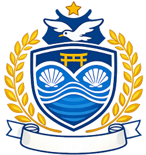

School introduction
School overview
Our school opened in 1965 after separating from Umikaze Junior High School. At its peak,
the total number of students increased to 624, but After that, it has been on a decreasing trend.
Currently, there are 412 students in the entire school. (Reiwa 8)
-------------------------------------------------------------------------------------------------------------------------------------------------------
School emblem

This school emblem was created as a graduation project in 1990.
The images currently posted were created using AI based on the actual school emblem.
-------------------------------------------------------------------------------------------------------------------------------------------------------
school song

-------------------------------------------------------------------------------------------------------------------------------------------------------
Shimaura Junior High School official character